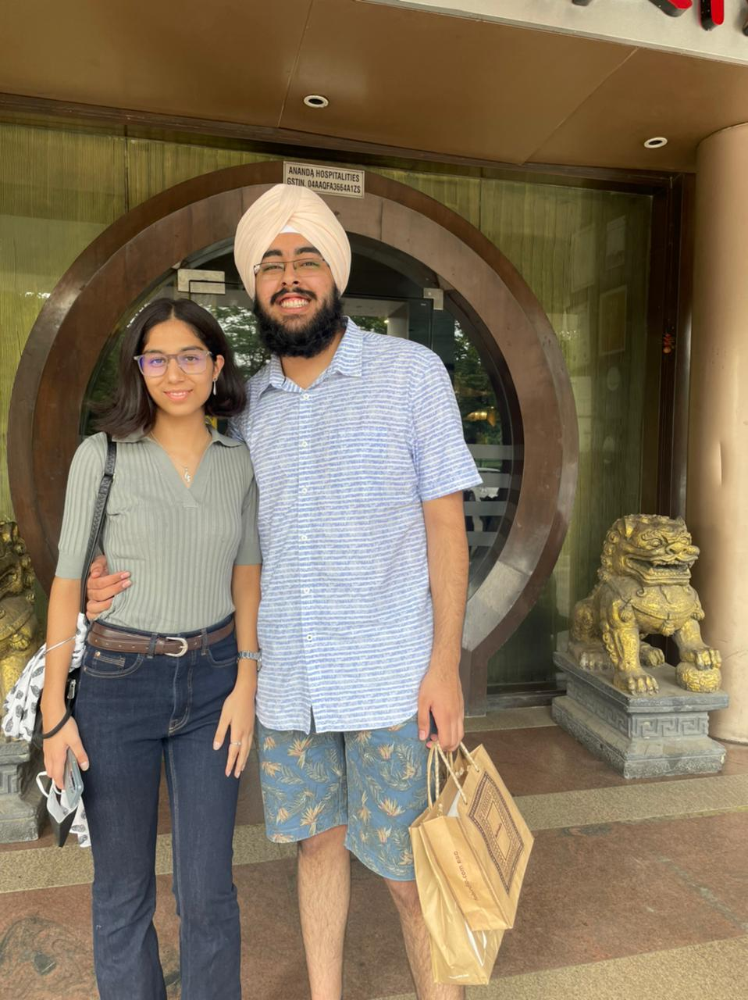

Happiest Birthday Khushi! Hi, new place to read birthday wishes being explored by both of us? But yes, idk how much space I have right now so yeah, will keep it short.
You’re the nicest, sweetest and the MOST caring person i’ve ever come across in my life.
Remember we were talking about how we are always us? I’m just super delighted by the fact that we are always us. it’s just something I can’t afford to lose. And i’m pretty confident that i won’t.
So yes, Happiest Birthday, i love you.